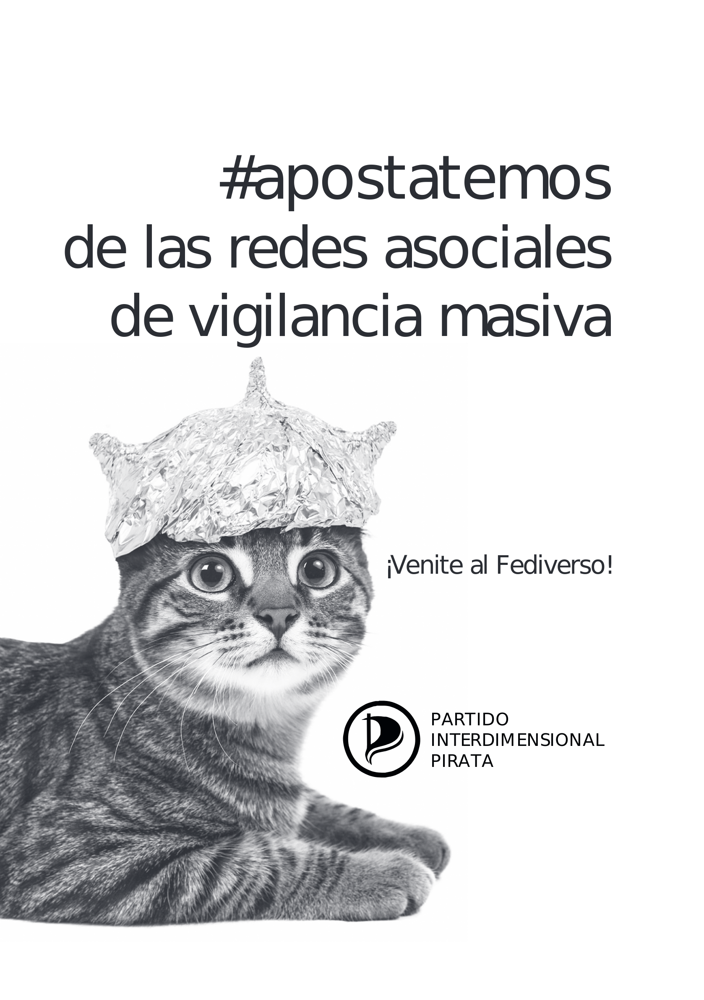
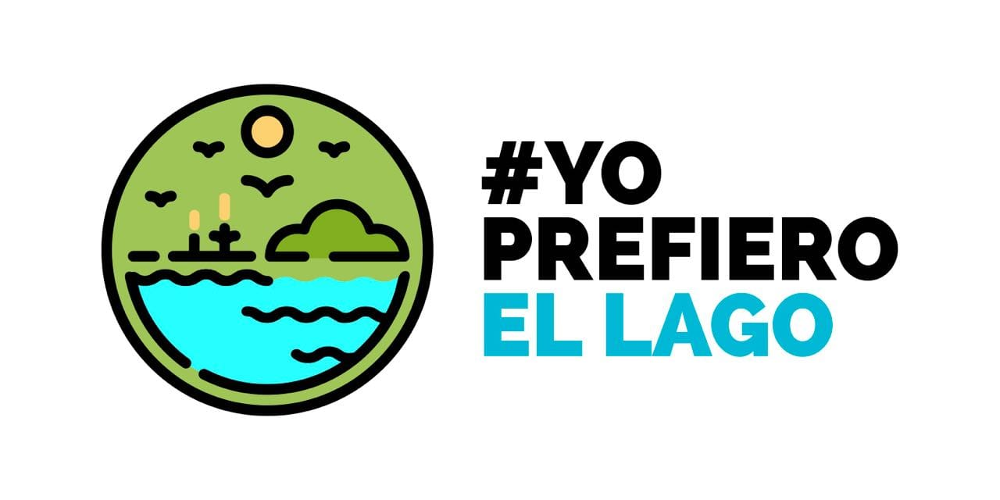
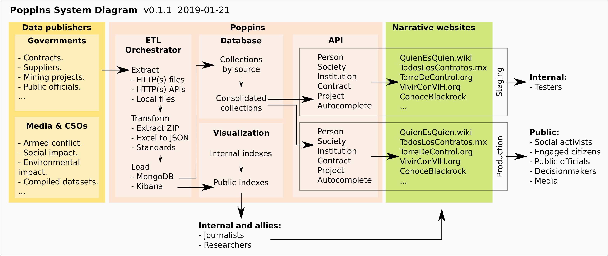
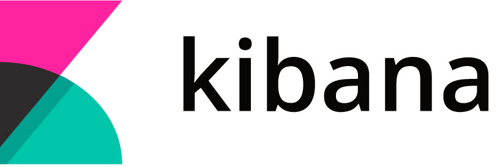

Datos abiertos contra la corrupción

Usando software libre.
Hecho en América Latina.
Con invitaciones a colaborar.
Presentación con licencia CC-BY-SA 4.0. © Martín Szyszlican.
Charla nerd, interrumpan
Hola, somos Martín @ladatano y Fernando @fmatzdorf
Nos interesan las posibilidades de la tecnología para apoyar causas políticas y sociales.
Martín nació en Argentina, se especializó en usabilidad. Trabaja en tecnología cívica ya hace varios años.
Fernando nació en Guatemala, es ingeniero en sistemas. Ha trabajado en periodismo de datos en varios países.
¿Sirve el boicot?
Según la RAE: Acción que se dirige contra una persona o entidad para obstaculizar el desarrollo o funcionamiento de una determinada actividad social o comercial.

¿Cómo puede el desarrollo con software libre ayudar a quitarle la plataforma a las mafias en el poder y evidenciar sus crímenes?
Ejemplos de estrategias automatizadas para potenciar la lucha por causas sociales.
Automaticemos el boicot
- A las redes sociales privativas.
- A los músicos violadores.
- A los trolls fascistas.
- A los empresarios asesinos.
Manifiesto por las redes sociales distribuídas
Larry Sanger (2019) - Cofundador de Wikipedia y Citizendium.- Somos libres de publicar nuestros datos, sin responder a ninguna corporación.
- Declaramos ser los propietarios legales de nuestros datos y tener derechos morales y legales para controlarlos.
- Las publicaciones que aparecen en redes sociales deben poder ser desde muchos servicios independientes (como el e-mail y los blogs).
Apostatemos de las redes sociales de vigilancia masiva
 Apostatar es el acto de renunciar a una creencia.
Leer zine y descargar ebook utopia.partidopirata.com.ar
feediverse: Software libre para publicar feeds en Mastodon, de a un artículo por vez.
0xacab.org/partido-interdimensional-pirata/feediverse
Boicot a los músicos violadores
- TuIdoloEsUnForro.com.ar
Colección de denuncias de violencia de género contra músicos y famosos. - Machecker
Iniciativa para crear un sistema para verificar si el artista que estás escuchando o a punto de emitir es machirulo. - ¿Cómo puedo ayudar?
Hay que hacer extensiones de navegador ... y un chingo de otros issues.
0xacab.org/faras/machecker
Boicot a los trolls fascistas
- BlockTogether.org
Sistema para compartir listas de bloqueo en twitter. - Fachómetro
Detector de usuarios fascistas, violentos y anti-derechos utilizando la API de twitter. - ¿Cómo lo hacemos?
Me avisan y los agrego al grupo del proyecto. - Partido Interdimensional Pirata
Hacen talleres de software y cultura libre, autodefensa digital. No electoral. PartidoPirata.com.ar
Boicot a los empresarios asesinos
¿Cómo se hace un boicot con datos abiertos?
- Se elige una causa relevante y de alto impacto.
- Se acompaña la organización comunitaria y se investiga para informar la estrategia.
- Se difunde para ganar apoyos y se ocupan los espacios de participación con argumentos contundentes.
Project on Organizing, Development, Education and Research (PODER)
Organización mexicana con alcance regional con el objetivo de reducir la captura corporativa del estado.
Programa de Datos Periodismo y Tecnología RindeCuentas.org: Medio de comunicación, TorreDeControl.org: Análisis de contrataciones, QuienEsQuien.wiki: Mapeo de redes de poder, MexicoLeaks.mx: Filtración segura.
TorreDeControl.org
Proyecto de análisis de contrataciones del NAICM
-
2017: Primer lanzamiento
- Desarrollo en colaboración con Wingu.
- GACM abrió contratos en OCDS.
- Foco en Carlos Slim y los amigos de Peña Nieto.
-

2018: Campaña de gran impacto
- No era sobre AMLO sino sobre los Frente de Pueblos en Defensa de la Tierra.
- Plataforma Organizativa vs NAICM y Pueblos Unidos vs NAICM.
- 15.000 habitantes en San Salvador Atenco y afectados en municipio Texcoco.
- Foco en 5 empresarios. Dueños de las empresas.
Poppins: Orquestadora de importadoras
superdatavisualisticETLidoscious!
Apache NiFi
- Orquestador de consumo de fuentes de datos abiertos.
Trae miles de componentes y usa nuestro código JavaScript para convertir a estándares Open Contracting Data Standard y Popolo Project. - Flows versionados para el tratamiento de diversas fuentes.
Editor visual con bloques comunes. - Deploy en un cluster de Kubernetes.
Escalabilidad, seguridad, siempre disponible.

- Visualiza y analiza millones de registros fácil y rápido.
Software libre basado en NodeJS y ElasticSearch (Java). Soporta datos tabulares y JSON anidados. - Permite crear visualizaciones para análisis y filtrado de datos.
Utilizado por periodistas e investigadores para buscar contratos. - Tenemos 4 millones de contratos cargados.
Facilita entender las relaciones entre funcionarios y empresarios. - Kibana.QuienEsQuien.wiki
TowerBuilder
- Permite construir sitios de visualización de contratos abiertos sin programar.
Tiene una visualización única, permite buscar contratos y publicar notas sobre ellos. - Basado en Jekyll y GitHub.
Facilita la edición y publicación sin perder libertad. Manual bilingüe. - Varios ejemplos:
TorreDeControl.org, VivirConVIH.org, ContratosDelDesastre.com, y varios proyectos en marcha.